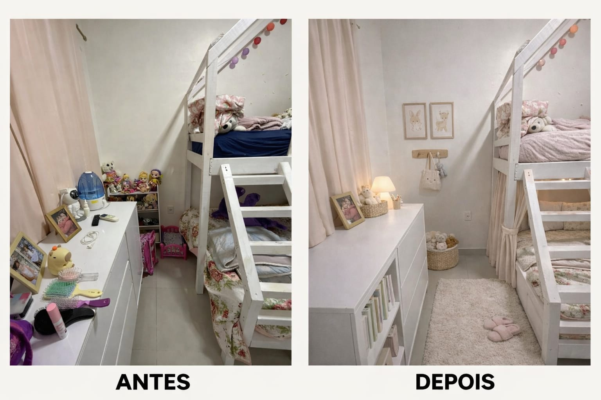
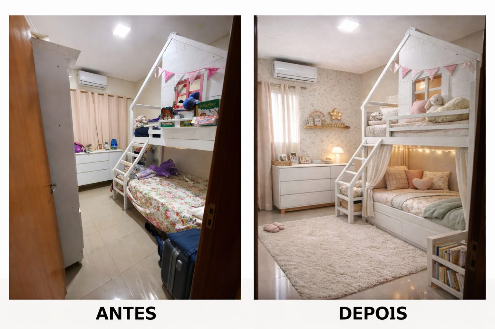

Transformando espaços em ambientes acolhedores
O Design Afetivo vai além da estética. É a arte de criar espaços que promovem bem-estar emocional, segurança e qualidade de vida. Trabalho tanto em ambientes residenciais quanto comerciais, transformando cada espaço em um lugar onde as pessoas se sintam verdadeiramente em casa.

ANTES / DEPOISTransformação completa de um quarto infantil, criando um espaço que equilibra funcionalidade com acolhimento emocional.
Redesign de um quarto compartilhado, criando um ambiente que respeita a individualidade de cada criança enquanto promove harmonia.

ANTES / DEPOISDesign Afetivo é uma abordagem que integra princípios de terapia ocupacional, psicologia ambiental e design de interiores. Não se trata apenas de tornar um espaço bonito, mas de criar ambientes que:
Cada projeto começa com uma escuta atenta. Compreendo as necessidades, rotinas, valores e sonhos das pessoas que habitarão o espaço. A partir daí, trabalho:
Vamos criar um ambiente que reflita quem você é e promova bem-estar para toda a família.
Solicite uma Consultoria